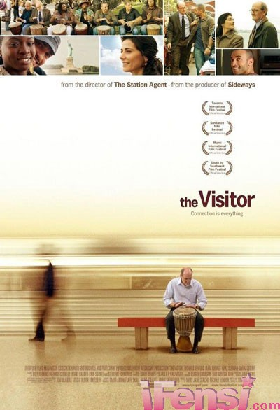

下班回家的两条路，一条被封，一条排着长长的车队...掉头往反方向开，并不知道要去哪里，只想避开堵塞的交通。开着开着心里有了目标，跑去湖南路买了久久鸭、尹氏汤包、奶茶和寿司。luke将一笼最爱的汤包在我转身的功夫吃的精光，另一笼留到明天给它解谗。外面下着雨，真希望它会在浴室里便便，但那是不可能的。拖到不能再拖下去的时候这才打着伞追着它在草地上“徘徊”。狗狗对人的依赖看看它们的眼神就知道，只要我在家，它就是个小跟屁虫。每每上班离家跟它说bye bye，它会站在门口一动不动望着我，等我一关上门，走到楼下就能在自家阳台的玻璃后面看到露着小脑袋往下张望的它....那时我会在下面朝它挥一挥手...
晚上看了部好片《The Visitor》，除了男主角Richard Jenkins在美国还算有名外（最广为人知的角色是他在HBO的剧集《六尺之下》中扮演的Nathaniel Fisher），其他三位演员都不是大牌，并且来自三个不同国家。这部电影没有明显的政治主张，仅仅是关于“人”的一部电影。故事情节自然流畅，观众没有被牵着鼻子走或被强迫产生判断的念头，剧情也没有美国式电影一贯的happy ending，确切的感受是无以言表的难过与压抑。
**年过60的经济学教授沃特不仅对事业丧失激情，在按部就班的生活中也变得消沉。妻子去世，儿子在伦敦生活。沃特平时学学钢琴来打发孤独的业余生活，也以此思念自己的妻子。可这种方式并不能舒缓他的孤独.............
**沃特遇到了来自叙利亚的年轻人塔瑞克和他的塞内加尔女友，就此改变了他苦闷的生活。他接触了非洲鼓，这个能够帮助他发泄内心情绪的途径......找到了久违的快乐，并被塔瑞克的才华和激情深深感染。
**个人很欣赏穆娜与沃特教授的角色扮演。演穆娜的女演员是来自以色列的巴勒斯坦人，现居法国。穆娜与沃特看完歌剧后在餐馆里有段对话既朴实又特别，镜头给了两个人的面部特写，值得细细品味。
**塔瑞克和他的塞内加尔女友：塔瑞克让其女友体会到生活的美好，而其女友让塔瑞克避免生活的不美好部分，一个是外向热情充满活力，一个安分守己，了解自己是谁、该干什么。
**电影不止一次展示地铁里拉二胡的中国人，与电影结尾沃特教授孤独地在地铁里敲击非洲鼓形成了情绪上的呼应。
没有任何煽情的对白，情绪随着故事发展极其自然地一点一点积聚。对于在美国移民局看押的外国人来讲并未找到一个崭新的人生，而是没有任何念想的茫然、虚空与等待.....失去了一切“人”的最基本权利。

9 Responses to “《The Visitor》”
2009-04-23
雨天赖在家好吃的＋好看的，太完美的周末。好象很多的满足就是这样无意中拣到的哟。相比之下，我这一个月前就有议程的周末显得及其漫长。这片子我回来要看的，很被吸引。
2009-04-24
你还醒着呢？这时候以为出差的人应该呼呼去了。
2009-04-24
天哪，我看了你的描述居然理所当然地觉得今天是周末。现在才反应过来，这是周四晚上啊。唉～富的富死穷的穷死哟。
2009-04-24
出差就相当于你的周末吧？嘿嘿~
2009-04-24
I watched this movie last year. It is a non-main stream movie. I feel the movie is very natural. The subway he played the drum is where I get off every morning to work..
2009-04-24
我家狗来的第三天，就无师自通坐在门口哼哼，原来是要小便。每天早晚两次，下雨天它冲到楼道，一次性解决掉，然后飞快跑回家。平时都是拉着你在外面到处转悠，分好几次才能尿完。可惜才11岁，今年春天离开了我:-(
2009-04-24
不知New Yorker 是否在地铁里看到过电影中拉二胡的中国人？那二胡声听起来很惆怅….
2009-04-25
记不太清电影里那个中国人的样子了，但是我经常在时代广场1号地铁站看见一个中国人拉二胡，每次我看到他，我觉得世界很悲惨，你到纽约来，到地铁看一看。。。有些人生活的很艰难拉。。。
2009-04-25
哦，能想象出你写的那些情形…
Leave A Reply
存档只读，评论已关闭。